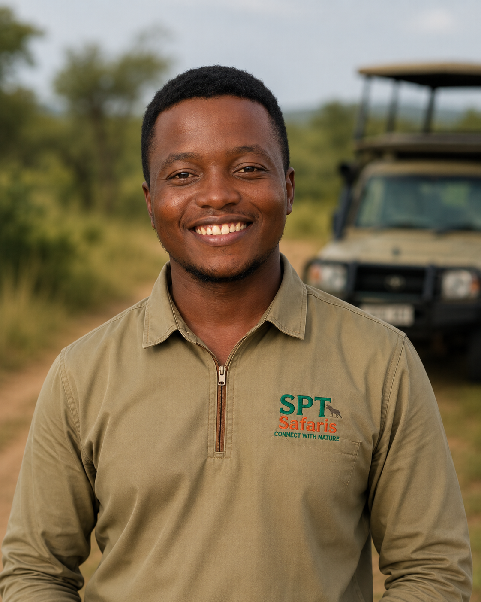
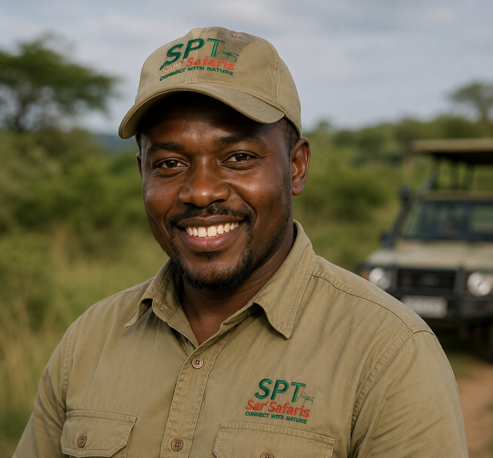
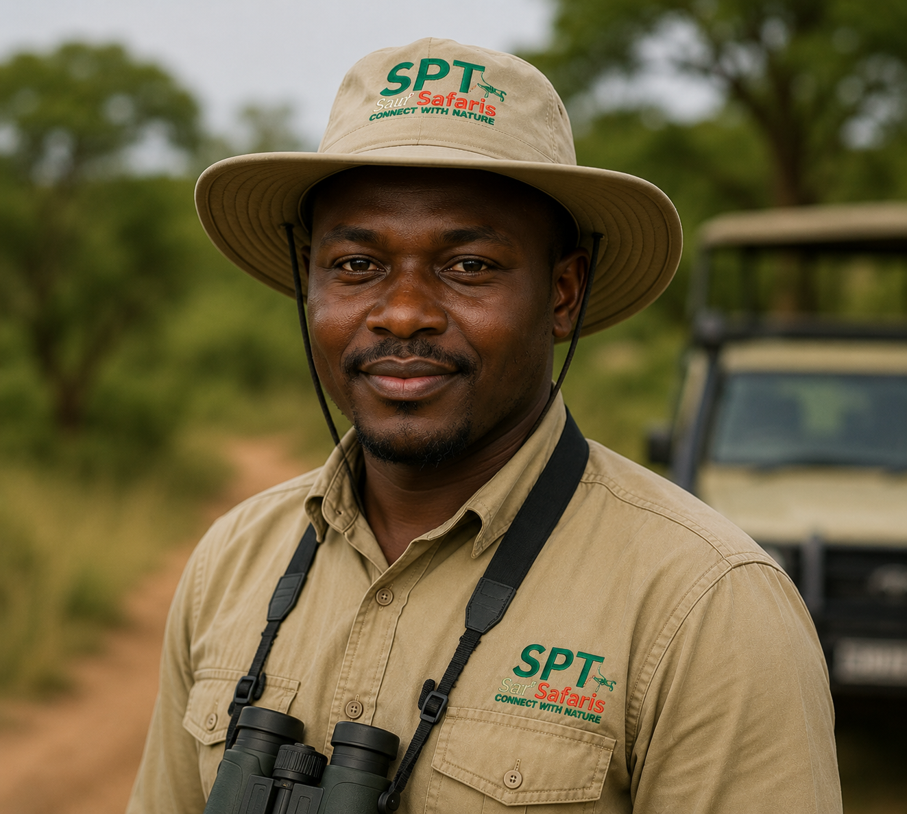

SPT Safaris began with a small team of Ugandan guides who believed every traveler deserved an authentic, well-organized connection to nature. Ten years later, we've grown into a full-service safari operator across Uganda, Rwanda, Kenya and Tanzania — without losing that personal touch.
Today our promise remains the same: thoughtful planning, expert guiding, and genuine care for the land and people that make East Africa extraordinary.
We partner with park authorities and community conservancies to protect the habitats we visit.
Local employment, fair wages, and direct investment in nearby villages.
From first inquiry to your final game drive, every detail is handled with care.
No hidden fees — just clear, fair pricing for unforgettable experiences.
Our guides and consultants bring decades of combined bush experience to every itinerary.



Our consultants are happy to help you plan the perfect itinerary.